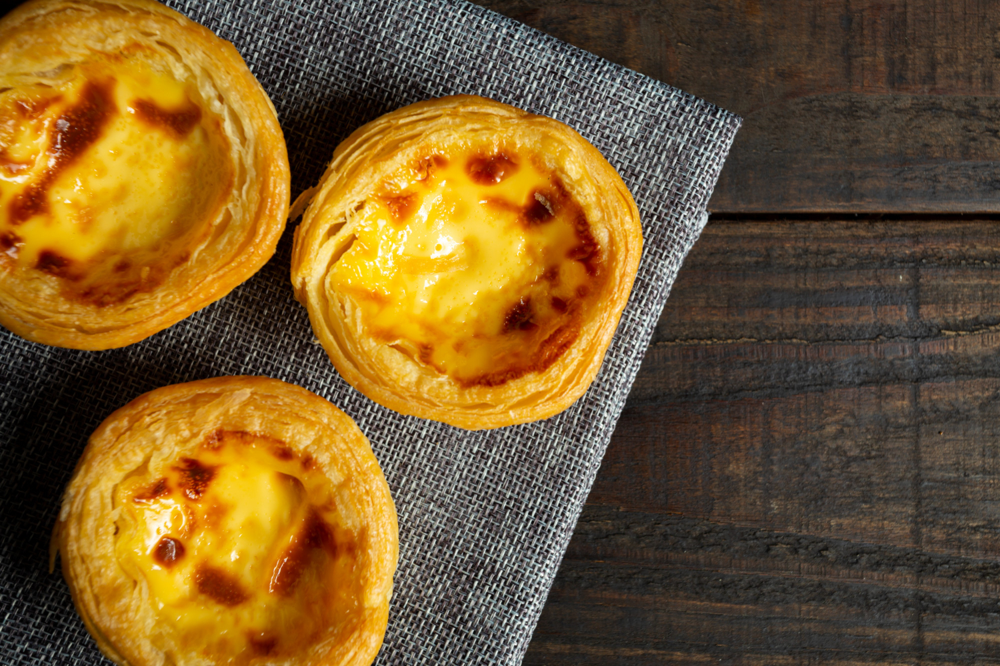

Home Page
Traditional Portuguese Pastry: Pastel de Nata

Description
Pastel de Nata is a famous Portuguese tart that features a caramelized custard made from egg yolks, sugar, milk,
and cream, nestled in a delicate puff pastry shell. It's typically baked at a high temperature, which gives the
custard its signature blistered surface and slightly caramelized flavor.
Pastéis de Nata are best enjoyed warm, often dusted with a bit of cinnamon or powdered sugar, and paired with a
cup of strong Portuguese coffee.
This iconic treat has become one of Portugal's most beloved and exported desserts, found in bakeries around the
world.
Ingredients
- Shortcrust Pastry:
- 200g of all-purpose flour
- 100g of butter
- 50ml of water
- 1 teaspoon of salt
- Tart Filling:
- 500ml whole milk
- Peel of 1 lemon
- 280g sugar
- 6 egg yolks
- 75g plain flour (without baking powder)
Steps
- Shortcrust Pastry:
- In a large bowl, combine the flour, cubed butter, salt, and water. Mix well until you have a smooth,
well-combined dough.
- Wrap in cling film and refrigerate until ready to use.
- Roll out the dough on a floured surface.
- Line a tart tin with a removable base with the dough and prick it well with a fork.
- Bake in a preheated oven at 180°C (356°F) for about 20 minutes, or until golden.
- Tart Filling:
- In a saucepan, combine the milk with the lemon peel and cinnamon stick. Bring to a boil, then remove and
discard the cinnamon and lemon.
- In a bowl, whisk the egg yolks with the sugar, pour in the milk, and add the sifted flour.
- Return the mixture to the saucepan and stir continuously until it thickens.
- Pour the custard into the tart shell and bake again for about 25 to 30 minutes at 180°C (356°F).
- Remove from the oven and let it cool before serving. Garnish with powdered sugar and cinnamon.